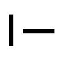

UML - Diagram aktivít (Activity Diagram)
Diagram aktivít popisuje správanie systému z hľadiska jeho pracovného toku (workflow). Tento diagram sa podobá stavovému diagramu, pretože aktivity sú stavom vykonávania niečoho. Diagram popisuje stav aktivít zobrazovaním sekvencie aktivít vykonávaných v systéme (tieto aktivity môžu byť paralelné alebo sekvenčné) a popisuje aké aktivity sa majú vyskytnúť a kedy sa majú vyskytnúť. Diagram zobrazuje tok aktivít celým systémom. Číta sa zhora nadol a obsahuje vetvy a spojenia (hrubá vodorovná a zvyslá čiara) na zobrazenie a popis aktivít systému, ktoré sa vyskytujú v rovnakom čase.Elementy a spojenia v UML .FRI:
- Aktivita reprezentuje neprerušiteľnú aktivitu objektu. Aktivita môže začať, keď všetky aktivity, ktoré ju predchádzajú skončili a poslali jej potrebné dáta v rámci toku aktivít. Keď aktivita skončí, pošle výstupné dáta aktivitám, ktoré za ňou následujú. Modeluje sa ako zaoblený obdĺžnik a meno aktivity sa nachádza vo vnútri obdĺžnika.
- Začiatočná a konečná aktivita sú špeciálne aktivity. Začiatočná aktivita nie je potrebná, ale uľahčuje čítanie diagramu. Keď skončí počiatočná aktivita, tak dáta putujú k ďalšej aktivite, ktorá sa vyskytne. Keď konečná aktivita dostane dáta od aktivít, ktoré ju predchádzajú, znamená to koniec celkovej aktivity, ktorú diagram aktivít modeluje. Začiatočná aktivita sa znázorňuje ako čierny kruh a konečná aktivita sa modeluje ako čierny kruh v bielom kruhu.
- Rozhodnutie predstavuje podmienené vetvetie v rámci toku aktivít, pričom obsahuje jeden vstup a dva a viacero výstupov. Výstupné toky aktivít sa označujú podmienkou a práve jedna by mala byť na základe vyhodnotenia podmienky zvolená ako pokračovanie toku aktivít. Modeluje sa ako kosoštvorec. Tento element sa použiva aj na spojenie tokov, ktoré boli rozdelené elementom Rozhodnutie.
- Spojenie slúži na spojenie súbežných tokov aktivít, ktoré prebiehali paralelne, ale už zanikla potreba vykonávania aktivít v rôznych vetvách. Modeluje sa ako vodorovná alebo zvyslá hrubá čiara. Tento element sa použiva aj na rozdelenie toku aktivít do dvoch a viacerých vetiev v prípade, že aktivity je možné vykonávať v systéme paralelne.
- Tok aktivít sa modeluje ako orientovaná čiara od predchádzajúcej aktivity k následujúcej aktivite. Pre bližšie pochopenie je možné si tok aktivít predstaviť ako tok dát z aktivity, ktorá sa skončila do akivity, ktorá následuje.
- Poznámka slúži na bližšie popísanie jednotlivých elementov diagramu a je možné ju pripojiť iba k entitám, nie k vzťahom medzi entitami.
- Čiara k poznámke znázorňuje, ktorú entitu poznámka bližšie popisuje.





Príklad diagramu aktivít pre spracovanie objednávky:

Pre viac informácii odporúčam navštíviť iné zdroje, napríad Activity Diagram wiki